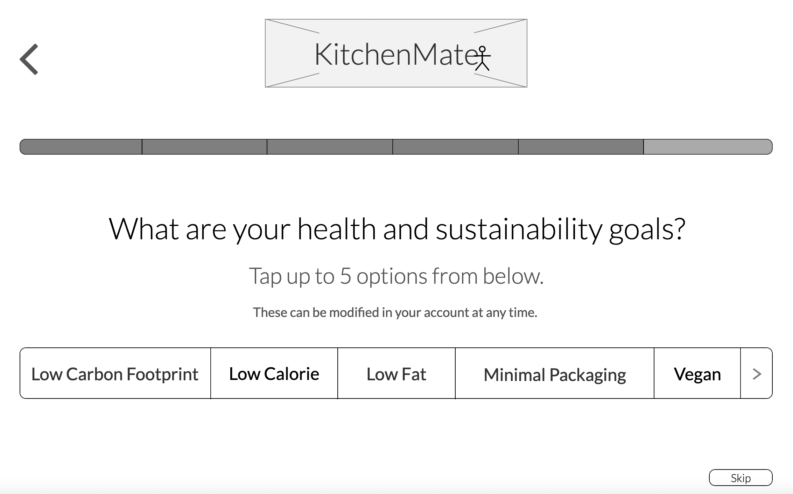
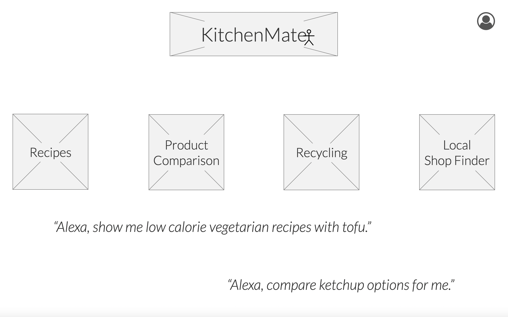
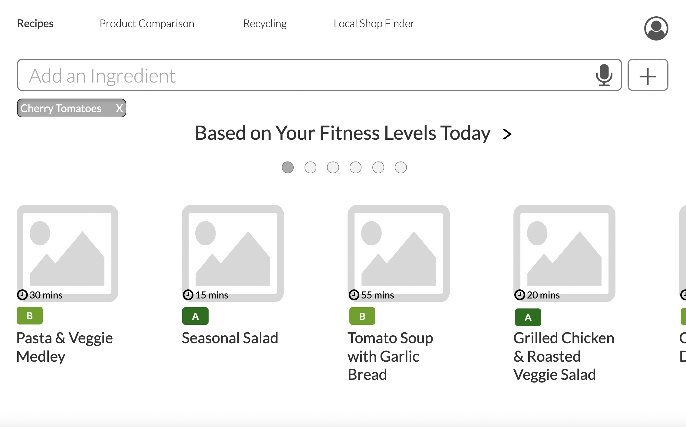
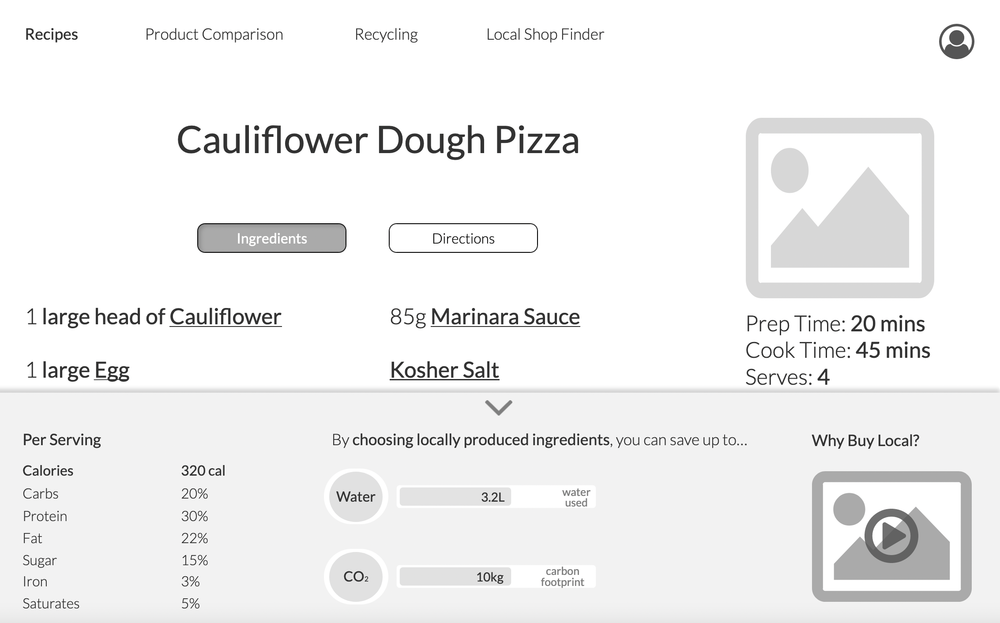
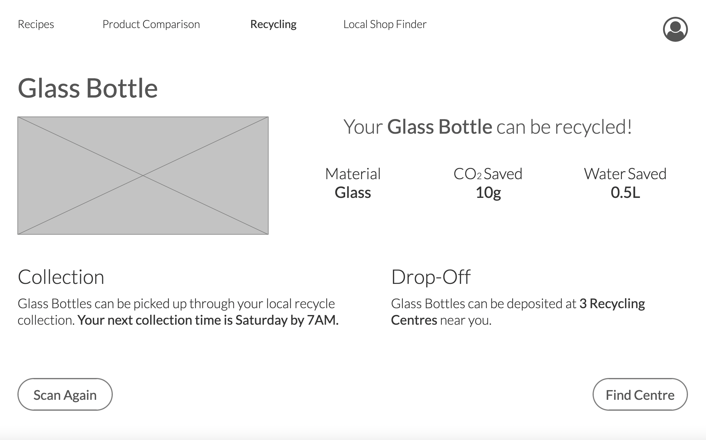
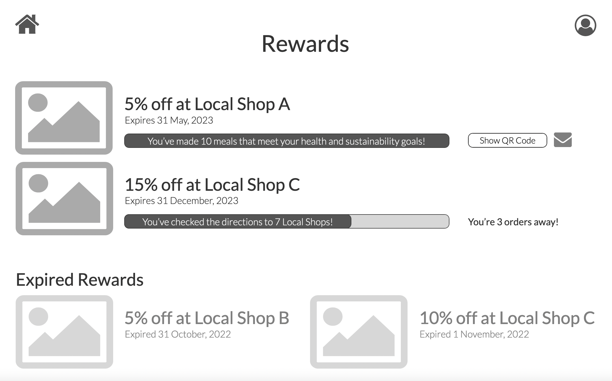

KitchenMate
Goal
Based on the given brief: to develop an application for the 10-inch Amazon Echo Show that encourages users to improve their "diets and [be] more mindful of the environmental impact of their food."
A focus should be placed on following the User Design Principles.
Tools
Miro, Axure, Pen and Paper (Sketches), Remote Interview Moderation (Microsoft Teams) and Recording (QuickTime) Software
Initial Meetings
A small group was formed to develop this application, titled KitchenMate.
The first steps we took as a team were to do some background research on the topics of diet and sustainability and then to meet to discuss that research.
One of my primary focuses in that initial meeting was making sure we agreed on a timeline.
As the team was working remotely, most of the screenshots included below are from our Miro Board.
Research (Interviews and Naturalistic Observations)
To create a truly user centered product, interviews with potential users were conducted to inform our future design decisions.
In order to allow the interviews to flow naturally, but to guarantee the range of points relevant to the brief was hit, we used semi-structured interviews.
Before said interviews, the team met to confirm which specific topics were of highest priority to cover and to write and refine a handful of questions.
After the interviews, and naturalistic observations in grocery stores, were finished, each team member wrote down key points:

Key Insights, Personas, and Future User Journeys
By looking for common trends and overlapping ideas in the data, our information was translated and scaled down to a more cohesive List of Key Insights.
The following are some examples of user insights - looking at nutrition labels in relation to diet, struggling with plastic packaging when making purchases from grocery stores, and wanting to have a more tangible, positive result in order to stay motivated when forming new habits.
The Key Insights were incredibly useful in helping create Personas (for both primary and secondary target users) and Future User Journeys for each of those Personas. These User Journeys and Personas were not only important down the line when it came to developing features, but allowed our team to continually empathize with the varying needs and challenges we thought our users could face.


The Key Insights were incredibly useful in helping create Personas (for both primary and secondary target users) and Future User Journeys for each of those Personas. These User Journeys and Personas were not only important down the line when it came to developing features, but allowed our team to continually empathize with the varying needs and challenges we thought our users could face.
POV Statements, HMW Questions, and Requirements
Creating Point of View Statements and, from those, How Might We Questions really helped the team move forward from brainstorming to refining ideas into actual features.
Our team worked closely to figure out both what would be core to include based on what users had said as well as what was realistic and important to implement based on the brief.
For example, multiple users mentioned wanting to buy healthier and more sustainable products, but struggled with the associated cost and the time it took to compare items in a grocery store. This turned into thinking about developing a tool so users could, at a glance, compare different items and make an informed "cost/benefit" decision; the hope was ease-of-use would help encourage users to buy healthier products, as required by the brief.
To help figure out how our potential features could be implementated, Functional, Non-Functional, and Data Requirements were tied back to the POV Statements. And, throughout the entire process, we made sure to empathize with our users' wants and needs and to refer back to our initial user research.

For example, multiple users mentioned wanting to buy healthier and more sustainable products, but struggled with the associated cost and the time it took to compare items in a grocery store. This turned into thinking about developing a tool so users could, at a glance, compare different items and make an informed "cost/benefit" decision; the hope was ease-of-use would help encourage users to buy healthier products, as required by the brief.
To help figure out how our potential features could be implementated, Functional, Non-Functional, and Data Requirements were tied back to the POV Statements. And, throughout the entire process, we made sure to empathize with our users' wants and needs and to refer back to our initial user research.
Sketches
The list of features to be implemented were divided into overarching, key categories;
each team member then took the lead on a couple of areas (I focused on the features related to presenting recipes and developing a rewards system to motivate users).
Low-fidelity sketching was used as a way of both brainstorming designs and efficiently and effectively communicating ideas between team members.
(Only my sketches are included below.)


Wireframes
Mid-fidelity, annotated wireframes were built based on the sketches.
As none of the team had experience with Axure, we decided to learn something new "on the job" and use this software.
When designing, referring to the User Journeys as well as considering other edge cases was crucial;
this helped the team understand how KitchenMate could be used to create something that would be accessible via both voice and touch while still aligning with the more typical, minimalist Smart Home interfaces.
When developing this touchscreen functionality, both tapping and swiping were used considering built-in Echo Show actions as well as existing expectations a Smart Home user might have.
The work was divided amongst team members and the designs of key features were prioritized before any additional screens were developed. I also created a grid system and template page (for assets like buttons, text, etc.) for the sake of consistency. Below are a few of the wireframe screens I focused on:
The work was divided amongst team members and the designs of key features were prioritized before any additional screens were developed. I also created a grid system and template page (for assets like buttons, text, etc.) for the sake of consistency. Below are a few of the wireframe screens I focused on:






Clickable Prototype
Our wireframes were then made into a clickable prototype.
When making the clickable prototype, the List of Key Insights was used as a reference to know what features to prioritize making clickable in anticipation of testing the core elements of our application.
These core features formed a story where the user would look for a recipe (filtered by their personal health and sustainability goals), compare the sustainability and nutritional information of items that the recipe required, and, later on, scan empty food waste (like jars) to learn if and when they could be recycled.
You can view the final clickable prototype here.
You can view the final clickable prototype here.
Evaluation
Considering Smart Home devices are typically more minimalist, the team decided it was worth the extra effort to create a mid-fidelity prototype (over a paper prototype) for testing.
Because we only had time to do one round of testing, this allowed for a product evaluation on a touch screen device and resulted in more detailed and nuanced feedback.
To work with the resources available, the team used both in-person and remote moderated testing with target users (with a classic think-aloud protocol for both). A set of tasks framed by a Scenario that was inspired by our Future User Journeys was developed to help the user understand why they might be moving through the motions of each task, especially considering the testing was not taking place in a kitchen environment.
For each participant, the results were added to Miro sticky notes, using colour to differentiate between positive and negative feedback so the team knew which elements would need to be changed as well as what should stay the same. Literal connections were drawn between the responses and frequency, effect on the product, and success rate were considered when prioritizing the results.

To work with the resources available, the team used both in-person and remote moderated testing with target users (with a classic think-aloud protocol for both). A set of tasks framed by a Scenario that was inspired by our Future User Journeys was developed to help the user understand why they might be moving through the motions of each task, especially considering the testing was not taking place in a kitchen environment.
For each participant, the results were added to Miro sticky notes, using colour to differentiate between positive and negative feedback so the team knew which elements would need to be changed as well as what should stay the same. Literal connections were drawn between the responses and frequency, effect on the product, and success rate were considered when prioritizing the results.